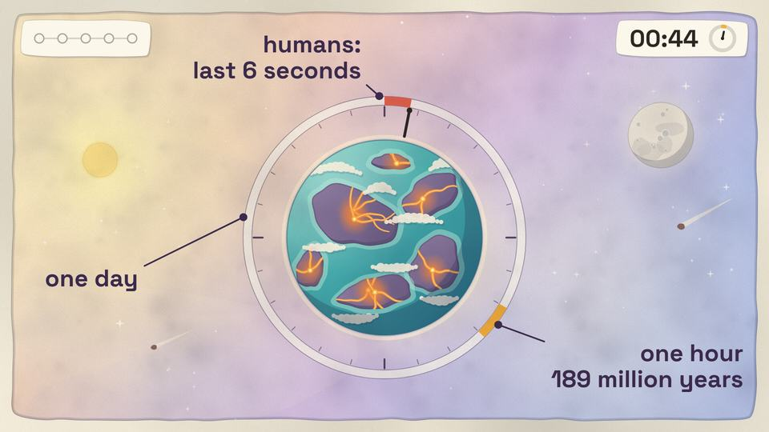

Learning Systems
Nine chapters, from a young planet with no life to a living world. Watch each one, read how we know, then play with a real simulation where you can change the rules.

Life spent most of the day as chemistry and single cells. Bodies, nerves and hunters all arrive after 20:58. Each number is a chapter, where the film puts it on its clock.
Each one: watch, play, read, try
Small simulated worlds where living systems organise themselves from local rules: no global controller, grounded in biology. Film 1 shows what we think happened and how we know; the simulations let you test it.